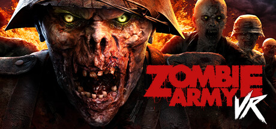

Hand gestures
Gameplay interactions built around hand gestures.
Shipped commercial project / XR Games & Rebellion
A selection of my gameplay and systems contributions to Zombie Army VR, made during my work at XR Games and Rebellion.

Zombie Army VR · Rebellion
Team contribution
These are specific areas I worked on within the wider commercial team. The project shipped as a collaborative production; this page describes my contribution rather than representing the work of the full development team.
Player interaction
Gameplay interactions built around hand gestures.
Adaptive trigger implementation for the player controls.
Pause-menu animations that support the in-game flow.
Game systems
Work on the flow between game systems.
Gameplay upgrades and their supporting flow.
Save system work and mission progress.
Online features
Leaderboard work for the shipped game.
Social integration work.
Backend setup supporting the connected features.
More work